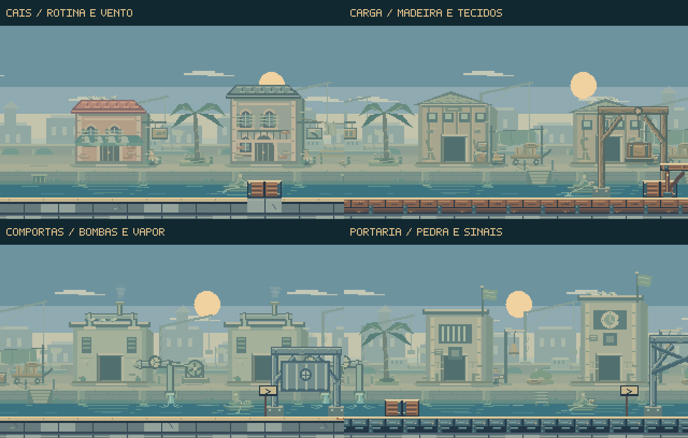
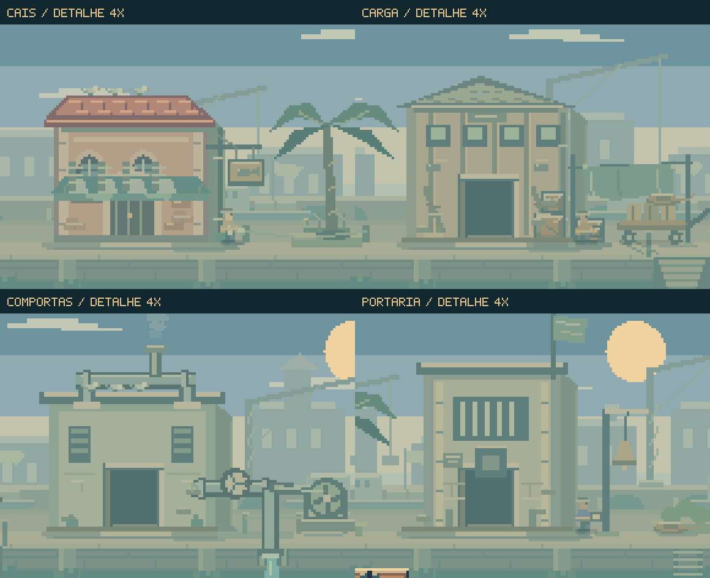
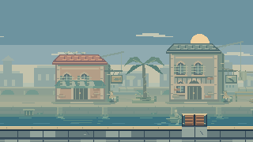
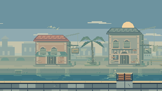
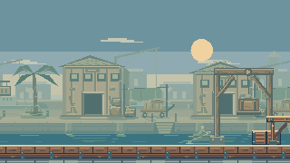
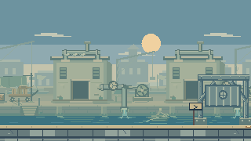

A cidade antes
do alerta.
O cais trabalha, as cargas aguardam sob os toldos e as bombas mantêm o canal em movimento. A aproximação da perseguição interrompe essa rotina: trabalhadores recuam, venezianas fecham e aves deixam os telhados.
Jogar a perseguição →Ver as animações ↓
Pequenos movimentos, uma mesma cidade.
24 segundos de composição dirigida com os desenhos nativos do jogo. Enquadramentos e momentos de alerta foram preparados para mostrar o ambiente; personagens de combate e áudio foram omitidos. Este material é um estudo de arte e animação, sem validação de partida.
O vento percorre palmeiras, bandeiras, roupas, placas e toldos. O vapor nasce no respiro da tubulação e se dispersa. Nas embarcações, o remo gira no apoio do casco e as mãos acompanham o cabo; a espuma aparece durante a puxada.
Construções com função e acabamento.

Placas presas às fachadas, calhas até o piso, varal com pontos de fixação, carrinhos apoiados nas rodas, cordas e madeira com ferragens. Os trabalhadores seguram pequenos objetos e reagem ao aviso em tempos diferentes.
Volantes e bielas conectados às bombas, vapor localizado nos respiros, umidade nos rodapés, pedra marcada pela chuva e bandeiras presas ao mastro. Guindastes e barcos distantes dão continuidade ao porto.
A rotina se transforma com a passagem.



